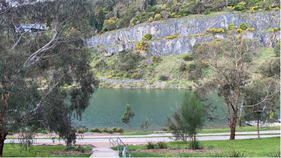
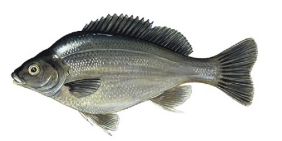
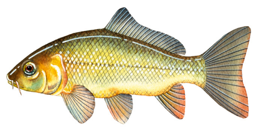

Ferntree Gully Quarry
 Welcome to Ferntree Gully QuarryFerntree Gully Quarry Reserve is a scenic park located in Melbourne's eastern suburb of Ferntree Gully. Once an active bluestone quarry, the site has been transformed into a tranquil urban oasis featuring a serene lake surrounded by native vegetation and dramatic cliff faces. The reserve offers amenities such as walking trails, picnic areas, playgrounds, and fishing platforms, making it a popular spot for families, walkers, and nature enthusiasts. Its unique landscape and peaceful environment provide a perfect escape from the city's hustle and bustle.
Fishing at Ferntree Gully Quarry
Fishing at Ferntree Gully Quarry Reserve is permitted and caters to anglers of all skill levels.
The lake is regularly stocked with rainbow trout, especially during school holidays, as part of
the Victorian Government's Go Fishing Victoria initiative. Other species commonly found in the
lake include redfin, carp, golden perch, Australian bass and Murray cod. Anglers can fish from
the shoreline or designated fishing platforms, using baits such as worms, corn, and soft
plastics. A valid Victorian recreational fishing licence is required, and all local fishing
regulations, including size and bag limits, must be observed. It’s worth noting that the water
here reaches depths of up to 11 meters, allowing anglers to use specialized baits to target
specific fish species.
The fish species commonly found in Ferntree gully quarry include:
Redfin Perch: A popular target species, especially in the cooler months. Lighter soft plastics,
spoons, or stream spinners are more recommended here.

Rainbow Trout: Occasionally found in cooler stretches, especially closer to tributaries like the Plenty River.Lighter soft plastics, spoons, or stream spinners are more recommended here.

Murray Cod: Murray Cod is Australia’s largest native freshwater fish and a highly sought-after target among anglers. Found in parts of the Murray-Darling Basin, including some upper sections of the Yarra River and its tributaries, Murray Cod prefer deep holes, submerged logs, and rocky structures. They can be caught using large hardbody lures, spinnerbaits, soft plastics, or live baits like yabbies and big worms. Heavy tackle is essential,Early mornings, late afternoons, and summer nights are the most productive times. Anglers must observe strict regulations, including a closed season from September to early December, minimum size limits, and daily catch limits. Catch and release is widely practiced to ensure the sustainability of the species.

Australian Bass: Australian Bass is a native freshwater and estuarine fish found along the eastern coast of Australia. Known for its strong fight and seasonal migration, it inhabits rivers, creeks, and estuaries. Australian Bass are popular among sport fishers and respond well to lures, flies, and live bait, especially during warm months and low-light conditions.This spot is one of the few places in the Melbourne area where you can catch Australian Bass. However, the bass here tend to be small in size, and catching them requires a lot of patience. Soft plastics and spoons are highly recommended for targeting them effectively.
Common Carp: Although introduced and considered a pest, they are abundant and put up a strong fight, making them appealing to some recreational fishers.Victoria has strict regulations regarding carp fishing. Due to the severe environmental damage carp cause to local waterways, all carp caught must not be returned to the water.Carp are omnivorous fish and can be caught with almost any type of bait. Naturally, non-artificial baits tend to be significantly more effective than lures. This principle generally applies across all types of waterways.
Fishing in this area is more about enjoying the serenity of the bushland and spotting wildlife than sheer volume of catches. Best results often come during early morning or late afternoon, particularly in spring and autumn. Local regulations require a Victorian Recreational Fishing Licence, and catch limits must be followed.